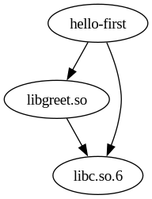

Shared Libraries (Shared Objects)¶
Problems With Static Libraries¶
Only origanizational measure
⟶ Copy of the code exists in every executable that links against the library
⟶ Size of executable larger than necessary
Convenience operation: linker can look into an archive, and pick things out accordingly
Maintainability
A fix in the library requires relinking all users
⟶ no central update of code
And Dynamic Libraries?¶
C Library is always linked dynamically for those reasons
What does an executable need?
$ readelf --dynamic hello-first Dynamic section at offset 0x2e20 contains 24 entries: Tag Type Name/Value 0x0000000000000001 (NEEDED) Shared library: [libc.so.6] ...
Where would
libc.sobe found once I ran the program?$ ldd hello-first linux-vdso.so.1 (0x00007fffe9fa7000) libc.so.6 => /lib64/libc.so.6 (0x00007f75ca289000) /lib64/ld-linux-x86-64.so.2 (0x00007f75ca46d000)
Relocations¶
Loader composes address space
Finds shared libraries that the executable depends on
Loads them into process’s memory/address space
⟶ at different positions
Different executables depend on different libraries
Security: what if an attacker knew the absolute positions of executable code?

And Build Dependencies?¶
Graph and Makefile basically unchanged …
 |
.PHONY: all
all: hello-first hello-second
hello.o: hello.c
gcc -fPIC -c -o hello.o hello.c
hello-flexible.o: hello-flexible.c
gcc -fPIC -c -o hello-flexible.o hello-flexible.c
libgreet.so: hello.o hello-flexible.o
gcc -shared -o libgreet.so hello.o hello-flexible.o
hello-first.o: hello-first.c
gcc -c -o hello-first.o hello-first.c
hello-second.o: hello-second.c
gcc -c -o hello-second.o hello-second.c
hello-first: hello-first.o libgreet.so
gcc -o hello-first hello-first.o libgreet.so
hello-second: hello-second.o libgreet.so
gcc -o hello-second hello-second.o libgreet.so
|
And Runtime Dependencies?¶
Executable is not self-contained anymore. It needs …
$ readelf --dynamic hello-first ... Tag Type Name/Value 0x0000000000000001 (NEEDED) Shared library: [libgreet.so] 0x0000000000000001 (NEEDED) Shared library: [libc.so.6] ...
Who has
libgreet.soandlibc.so.6?$ readelf --dynamic libgreet.so ... Tag Type Name/Value 0x0000000000000001 (NEEDED) Shared library: [libc.so.6] ...
⟶ Runtime dependencies

And Starting An Executable Having External Dependencies?¶
The loader …
Reads the executable (an ELF file)
Determines list of dependencies (shared libraries)
Searches for dependencies
Places them into the address space
Applies indirections ⟶ relocations

This Is Not Simple: Library Search Path¶
$ ./hello-first
./hello-first: error while loading shared libraries: libgreet.so: cannot open shared object file: No such file or directory
Shared library search fails
Loader does not look in the current working directory (for security!)
⟶
LD_LIBRARY_PATHenvironment variable
$ LD_LIBRARY_PATH=$(pwd)
$ export LD_LIBRARY_PATH
$ ./hello-first
Hello World
Summary: Static Versus Dynamic Libraries¶
Type |
Pros |
Cons |
|---|---|---|
Static library |
|
|
Shared library |
|
|
⟶ in larger code bases
Build static libraries during development
Switch to shared libraries for release